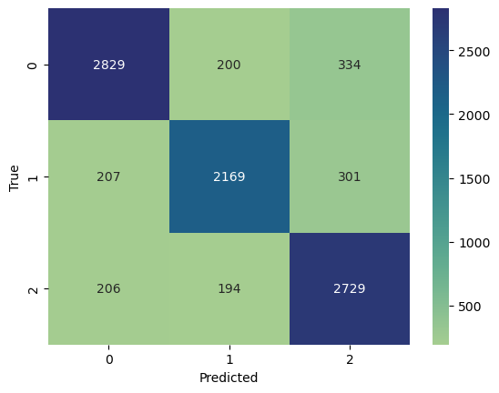

Word2Vecを用いるセンチメント分析#
import pandas as pd
import numpy as np
import torch
#device = torch.device('mps') # macbook
device = torch.device('cuda' if torch.cuda.is_available() else 'cpu')
データ準備#
CSVファイルを読み込む#
df= pd.read_csv('./Data/twitter_training.csv',names=['index','brand','sentiment','text'])
df.head()
---------------------------------------------------------------------------
FileNotFoundError Traceback (most recent call last)
Cell In[2], line 1
----> 1 df= pd.read_csv('./Data/twitter_training.csv',names=['index','brand','sentiment','text'])
2 df.head()
File ~/anaconda3/envs/jupyterbook/lib/python3.12/site-packages/pandas/io/parsers/readers.py:948, in read_csv(filepath_or_buffer, sep, delimiter, header, names, index_col, usecols, dtype, engine, converters, true_values, false_values, skipinitialspace, skiprows, skipfooter, nrows, na_values, keep_default_na, na_filter, verbose, skip_blank_lines, parse_dates, infer_datetime_format, keep_date_col, date_parser, date_format, dayfirst, cache_dates, iterator, chunksize, compression, thousands, decimal, lineterminator, quotechar, quoting, doublequote, escapechar, comment, encoding, encoding_errors, dialect, on_bad_lines, delim_whitespace, low_memory, memory_map, float_precision, storage_options, dtype_backend)
935 kwds_defaults = _refine_defaults_read(
936 dialect,
937 delimiter,
(...)
944 dtype_backend=dtype_backend,
945 )
946 kwds.update(kwds_defaults)
--> 948 return _read(filepath_or_buffer, kwds)
File ~/anaconda3/envs/jupyterbook/lib/python3.12/site-packages/pandas/io/parsers/readers.py:611, in _read(filepath_or_buffer, kwds)
608 _validate_names(kwds.get("names", None))
610 # Create the parser.
--> 611 parser = TextFileReader(filepath_or_buffer, **kwds)
613 if chunksize or iterator:
614 return parser
File ~/anaconda3/envs/jupyterbook/lib/python3.12/site-packages/pandas/io/parsers/readers.py:1448, in TextFileReader.__init__(self, f, engine, **kwds)
1445 self.options["has_index_names"] = kwds["has_index_names"]
1447 self.handles: IOHandles | None = None
-> 1448 self._engine = self._make_engine(f, self.engine)
File ~/anaconda3/envs/jupyterbook/lib/python3.12/site-packages/pandas/io/parsers/readers.py:1705, in TextFileReader._make_engine(self, f, engine)
1703 if "b" not in mode:
1704 mode += "b"
-> 1705 self.handles = get_handle(
1706 f,
1707 mode,
1708 encoding=self.options.get("encoding", None),
1709 compression=self.options.get("compression", None),
1710 memory_map=self.options.get("memory_map", False),
1711 is_text=is_text,
1712 errors=self.options.get("encoding_errors", "strict"),
1713 storage_options=self.options.get("storage_options", None),
1714 )
1715 assert self.handles is not None
1716 f = self.handles.handle
File ~/anaconda3/envs/jupyterbook/lib/python3.12/site-packages/pandas/io/common.py:863, in get_handle(path_or_buf, mode, encoding, compression, memory_map, is_text, errors, storage_options)
858 elif isinstance(handle, str):
859 # Check whether the filename is to be opened in binary mode.
860 # Binary mode does not support 'encoding' and 'newline'.
861 if ioargs.encoding and "b" not in ioargs.mode:
862 # Encoding
--> 863 handle = open(
864 handle,
865 ioargs.mode,
866 encoding=ioargs.encoding,
867 errors=errors,
868 newline="",
869 )
870 else:
871 # Binary mode
872 handle = open(handle, ioargs.mode)
FileNotFoundError: [Errno 2] No such file or directory: './Data/twitter_training.csv'
df["sentiment"].value_counts()
Negative 22542
Positive 20832
Neutral 18318
Irrelevant 12990
Name: sentiment, dtype: int64
df["label"]=df["sentiment"].replace({"Positive":2,"Negative":0,"Neutral":1,"Irrelevant":np.nan})
df=df[['text','label']]
df=df.dropna()
トレーニング、バリデーション、テストデータに分割#
from sklearn.model_selection import train_test_split
# Split data (70% train, 15% validation, 15% test)
train_df, temp_df = train_test_split(df, test_size=0.3, random_state=42)
val_df, test_df = train_test_split(temp_df, test_size=0.5, random_state=42)
テキストデータの前処理#
テキストを小文字に変換
句読点を削除
トークン化
import re
import nltk
from nltk.tokenize import word_tokenize
# Download NLTK data (if not already done)
nltk.download('punkt')
# Function for preprocessing text
def preprocess_text(text):
text = text.lower() # Lowercasing
text = re.sub(r'\W+', ' ', text) # Remove punctuation
tokens = word_tokenize(text) # Tokenization
return tokens
[nltk_data] Downloading package punkt to /Users/ryozawau/nltk_data...
[nltk_data] Package punkt is already up-to-date!
# Apply preprocessing
train_df['processed_text'] = train_df['text'].apply(preprocess_text)
val_df['processed_text'] = val_df['text'].apply(preprocess_text)
test_df['processed_text'] = test_df['text'].apply(preprocess_text)
単語分散表現によって特徴量の作成#
import gensim.downloader
word2vec = gensim.downloader.load('word2vec-google-news-300')
def tokens_to_embedding(tokens, model, embedding_size=300):
embeddings = [model[word] for word in tokens if word in model]
if len(embeddings) == 0:
return np.zeros(embedding_size)
else:
return np.mean(embeddings, axis=0)
train_df['embeddings'] = train_df['processed_text'].apply(lambda x: tokens_to_embedding(x, word2vec))
val_df['embeddings'] = val_df['processed_text'].apply(lambda x: tokens_to_embedding(x, word2vec))
test_df['embeddings'] = test_df['processed_text'].apply(lambda x: tokens_to_embedding(x, word2vec))
学習用データセットの作成#
from torch.utils.data import DataLoader, TensorDataset
def create_dataset(df):
features = torch.tensor(df['embeddings'].tolist(),dtype=torch.float32).to(device)
labels = torch.tensor(df['label'].values, dtype=torch.long).to(device)
return TensorDataset(features, labels)
train_dataset = create_dataset(train_df)
val_dataset = create_dataset(val_df)
test_dataset = create_dataset(test_df)
batch_size = 32
train_loader = DataLoader(train_dataset, batch_size=batch_size, shuffle=True)
val_loader = DataLoader(val_dataset, batch_size=batch_size)
test_loader = DataLoader(test_dataset, batch_size=batch_size)
モデルの作成#
import torch.nn as nn
import torch.optim as optim
# Define a simple Neural Network
class SimpleNN(nn.Module):
def __init__(self, input_size, hidden_size, num_classes):
super(SimpleNN, self).__init__()
self.fc1 = nn.Linear(input_size, hidden_size)
self.relu = nn.ReLU()
self.fc2 = nn.Linear(hidden_size, num_classes)
def forward(self, x):
out = self.fc1(x)
out = self.relu(out)
out = self.fc2(out)
return out
# Model, Loss, and Optimizer
embedding_size = 300
model = SimpleNN(input_size=embedding_size, hidden_size=100, num_classes=3).to(device)
criterion = nn.CrossEntropyLoss()
optimizer = optim.Adam(model.parameters(), lr=0.001)
学習の実行#
from sklearn.metrics import accuracy_score, f1_score
#from torch.utils.tensorboard import SummaryWriter
# Initialize the SummaryWriter
#writer = SummaryWriter('runs/sentiment')
num_epochs = 200
best_f1_score = 0.0
# Training loop
# Training and validation loop
for epoch in range(num_epochs):
# Training phase
model.train()
train_loss = 0.0
for inputs, labels in train_loader:
optimizer.zero_grad()
outputs = model(inputs)
loss = criterion(outputs, labels)
loss.backward()
optimizer.step()
train_loss += loss.item()
# Log training loss
#writer.add_scalar('Loss/train', train_loss/len(train_loader), epoch)
# Validation phase
model.eval()
val_loss = 0.0
val_preds = []
val_labels = []
with torch.no_grad():
for inputs, labels in val_loader:
outputs = model(inputs)
_, predicted = torch.max(outputs, 1)
val_preds.extend(predicted.numpy())
val_labels.extend(labels.numpy())
# Log validation loss
#writer.add_scalar('Loss/val', val_loss/len(val_loader), epoch)
# Calculate accuracy and F1-score
accuracy = accuracy_score(val_labels, val_preds)
f1 = f1_score(val_labels, val_preds, average='weighted')
# Log accuracy and F1-score
#writer.add_scalar('Accuracy/val', accuracy, epoch)
#writer.add_scalar('F1_Score/val', f1, epoch)
print(f'Epoch {epoch+1}, Accuracy: {accuracy:.4f}, F1 Score: {f1:.4f}')
if f1 > best_f1_score:
best_f1_score = f1
# Save the model
torch.save(model.state_dict(), './Model/best_model.pth')
print(f"New best model saved at Epoch {epoch+1} with F1 Score: {f1:.4f}")
Show code cell output
Epoch 1, Accuracy: 0.6624, F1 Score: 0.6575
New best model saved at Epoch 1 with F1 Score: 0.6575
Epoch 2, Accuracy: 0.6721, F1 Score: 0.6658
New best model saved at Epoch 2 with F1 Score: 0.6658
Epoch 3, Accuracy: 0.6843, F1 Score: 0.6820
New best model saved at Epoch 3 with F1 Score: 0.6820
Epoch 4, Accuracy: 0.6883, F1 Score: 0.6857
New best model saved at Epoch 4 with F1 Score: 0.6857
Epoch 5, Accuracy: 0.6932, F1 Score: 0.6916
New best model saved at Epoch 5 with F1 Score: 0.6916
Epoch 6, Accuracy: 0.6975, F1 Score: 0.6950
New best model saved at Epoch 6 with F1 Score: 0.6950
Epoch 7, Accuracy: 0.7042, F1 Score: 0.6986
New best model saved at Epoch 7 with F1 Score: 0.6986
Epoch 8, Accuracy: 0.7129, F1 Score: 0.7099
New best model saved at Epoch 8 with F1 Score: 0.7099
Epoch 9, Accuracy: 0.7182, F1 Score: 0.7147
New best model saved at Epoch 9 with F1 Score: 0.7147
Epoch 10, Accuracy: 0.7301, F1 Score: 0.7296
New best model saved at Epoch 10 with F1 Score: 0.7296
Epoch 11, Accuracy: 0.7268, F1 Score: 0.7271
Epoch 12, Accuracy: 0.7435, F1 Score: 0.7423
New best model saved at Epoch 12 with F1 Score: 0.7423
Epoch 13, Accuracy: 0.7479, F1 Score: 0.7465
New best model saved at Epoch 13 with F1 Score: 0.7465
Epoch 14, Accuracy: 0.7450, F1 Score: 0.7415
Epoch 15, Accuracy: 0.7540, F1 Score: 0.7529
New best model saved at Epoch 15 with F1 Score: 0.7529
Epoch 16, Accuracy: 0.7576, F1 Score: 0.7561
New best model saved at Epoch 16 with F1 Score: 0.7561
Epoch 17, Accuracy: 0.7480, F1 Score: 0.7492
Epoch 18, Accuracy: 0.7611, F1 Score: 0.7595
New best model saved at Epoch 18 with F1 Score: 0.7595
Epoch 19, Accuracy: 0.7709, F1 Score: 0.7697
New best model saved at Epoch 19 with F1 Score: 0.7697
Epoch 20, Accuracy: 0.7691, F1 Score: 0.7690
Epoch 21, Accuracy: 0.7702, F1 Score: 0.7679
Epoch 22, Accuracy: 0.7717, F1 Score: 0.7722
New best model saved at Epoch 22 with F1 Score: 0.7722
Epoch 23, Accuracy: 0.7798, F1 Score: 0.7800
New best model saved at Epoch 23 with F1 Score: 0.7800
Epoch 24, Accuracy: 0.7800, F1 Score: 0.7797
Epoch 25, Accuracy: 0.7812, F1 Score: 0.7804
New best model saved at Epoch 25 with F1 Score: 0.7804
Epoch 26, Accuracy: 0.7847, F1 Score: 0.7845
New best model saved at Epoch 26 with F1 Score: 0.7845
Epoch 27, Accuracy: 0.7789, F1 Score: 0.7775
Epoch 28, Accuracy: 0.7881, F1 Score: 0.7879
New best model saved at Epoch 28 with F1 Score: 0.7879
Epoch 29, Accuracy: 0.7928, F1 Score: 0.7924
New best model saved at Epoch 29 with F1 Score: 0.7924
Epoch 30, Accuracy: 0.7897, F1 Score: 0.7901
Epoch 31, Accuracy: 0.8004, F1 Score: 0.8004
New best model saved at Epoch 31 with F1 Score: 0.8004
Epoch 32, Accuracy: 0.7960, F1 Score: 0.7948
Epoch 33, Accuracy: 0.8031, F1 Score: 0.8028
New best model saved at Epoch 33 with F1 Score: 0.8028
Epoch 34, Accuracy: 0.8013, F1 Score: 0.8005
Epoch 35, Accuracy: 0.7990, F1 Score: 0.7993
Epoch 36, Accuracy: 0.8054, F1 Score: 0.8047
New best model saved at Epoch 36 with F1 Score: 0.8047
Epoch 37, Accuracy: 0.8013, F1 Score: 0.8013
Epoch 38, Accuracy: 0.8026, F1 Score: 0.8029
Epoch 39, Accuracy: 0.8087, F1 Score: 0.8083
New best model saved at Epoch 39 with F1 Score: 0.8083
Epoch 40, Accuracy: 0.8043, F1 Score: 0.8035
Epoch 41, Accuracy: 0.8075, F1 Score: 0.8070
Epoch 42, Accuracy: 0.8106, F1 Score: 0.8111
New best model saved at Epoch 42 with F1 Score: 0.8111
Epoch 43, Accuracy: 0.8147, F1 Score: 0.8146
New best model saved at Epoch 43 with F1 Score: 0.8146
Epoch 44, Accuracy: 0.8124, F1 Score: 0.8118
Epoch 45, Accuracy: 0.8153, F1 Score: 0.8144
Epoch 46, Accuracy: 0.8091, F1 Score: 0.8088
Epoch 47, Accuracy: 0.8209, F1 Score: 0.8204
New best model saved at Epoch 47 with F1 Score: 0.8204
Epoch 48, Accuracy: 0.8132, F1 Score: 0.8138
Epoch 49, Accuracy: 0.8182, F1 Score: 0.8180
Epoch 50, Accuracy: 0.8195, F1 Score: 0.8190
Epoch 51, Accuracy: 0.8196, F1 Score: 0.8193
Epoch 52, Accuracy: 0.8032, F1 Score: 0.8021
Epoch 53, Accuracy: 0.8260, F1 Score: 0.8258
New best model saved at Epoch 53 with F1 Score: 0.8258
Epoch 54, Accuracy: 0.8221, F1 Score: 0.8220
Epoch 55, Accuracy: 0.8214, F1 Score: 0.8212
Epoch 56, Accuracy: 0.8241, F1 Score: 0.8237
Epoch 57, Accuracy: 0.8253, F1 Score: 0.8253
Epoch 58, Accuracy: 0.8226, F1 Score: 0.8229
Epoch 59, Accuracy: 0.8245, F1 Score: 0.8239
Epoch 60, Accuracy: 0.8266, F1 Score: 0.8261
New best model saved at Epoch 60 with F1 Score: 0.8261
Epoch 61, Accuracy: 0.8222, F1 Score: 0.8213
Epoch 62, Accuracy: 0.8214, F1 Score: 0.8214
Epoch 63, Accuracy: 0.8254, F1 Score: 0.8250
Epoch 64, Accuracy: 0.8315, F1 Score: 0.8315
New best model saved at Epoch 64 with F1 Score: 0.8315
Epoch 65, Accuracy: 0.8309, F1 Score: 0.8306
Epoch 66, Accuracy: 0.8269, F1 Score: 0.8265
Epoch 67, Accuracy: 0.8257, F1 Score: 0.8252
Epoch 68, Accuracy: 0.8296, F1 Score: 0.8293
Epoch 69, Accuracy: 0.8222, F1 Score: 0.8213
Epoch 70, Accuracy: 0.8305, F1 Score: 0.8304
Epoch 71, Accuracy: 0.8243, F1 Score: 0.8239
Epoch 72, Accuracy: 0.8324, F1 Score: 0.8324
New best model saved at Epoch 72 with F1 Score: 0.8324
Epoch 73, Accuracy: 0.8277, F1 Score: 0.8271
Epoch 74, Accuracy: 0.8356, F1 Score: 0.8358
New best model saved at Epoch 74 with F1 Score: 0.8358
Epoch 75, Accuracy: 0.8304, F1 Score: 0.8301
Epoch 76, Accuracy: 0.8308, F1 Score: 0.8306
Epoch 77, Accuracy: 0.8250, F1 Score: 0.8257
Epoch 78, Accuracy: 0.8340, F1 Score: 0.8337
Epoch 79, Accuracy: 0.8297, F1 Score: 0.8293
Epoch 80, Accuracy: 0.8340, F1 Score: 0.8340
Epoch 81, Accuracy: 0.8307, F1 Score: 0.8302
Epoch 82, Accuracy: 0.8357, F1 Score: 0.8356
Epoch 83, Accuracy: 0.8342, F1 Score: 0.8341
Epoch 84, Accuracy: 0.8343, F1 Score: 0.8343
Epoch 85, Accuracy: 0.8285, F1 Score: 0.8282
Epoch 86, Accuracy: 0.8344, F1 Score: 0.8339
Epoch 87, Accuracy: 0.8271, F1 Score: 0.8269
Epoch 88, Accuracy: 0.8346, F1 Score: 0.8345
Epoch 89, Accuracy: 0.8339, F1 Score: 0.8334
Epoch 90, Accuracy: 0.8398, F1 Score: 0.8398
New best model saved at Epoch 90 with F1 Score: 0.8398
Epoch 91, Accuracy: 0.8401, F1 Score: 0.8400
New best model saved at Epoch 91 with F1 Score: 0.8400
Epoch 92, Accuracy: 0.8412, F1 Score: 0.8411
New best model saved at Epoch 92 with F1 Score: 0.8411
Epoch 93, Accuracy: 0.8337, F1 Score: 0.8333
Epoch 94, Accuracy: 0.8365, F1 Score: 0.8362
Epoch 95, Accuracy: 0.8297, F1 Score: 0.8291
Epoch 96, Accuracy: 0.8389, F1 Score: 0.8391
Epoch 97, Accuracy: 0.8387, F1 Score: 0.8386
Epoch 98, Accuracy: 0.8408, F1 Score: 0.8405
Epoch 99, Accuracy: 0.8417, F1 Score: 0.8414
New best model saved at Epoch 99 with F1 Score: 0.8414
Epoch 100, Accuracy: 0.8386, F1 Score: 0.8382
Epoch 101, Accuracy: 0.8360, F1 Score: 0.8354
Epoch 102, Accuracy: 0.8420, F1 Score: 0.8419
New best model saved at Epoch 102 with F1 Score: 0.8419
Epoch 103, Accuracy: 0.8423, F1 Score: 0.8421
New best model saved at Epoch 103 with F1 Score: 0.8421
Epoch 104, Accuracy: 0.8345, F1 Score: 0.8347
Epoch 105, Accuracy: 0.8411, F1 Score: 0.8413
Epoch 106, Accuracy: 0.8294, F1 Score: 0.8286
Epoch 107, Accuracy: 0.8372, F1 Score: 0.8367
Epoch 108, Accuracy: 0.8425, F1 Score: 0.8423
New best model saved at Epoch 108 with F1 Score: 0.8423
Epoch 109, Accuracy: 0.8399, F1 Score: 0.8399
Epoch 110, Accuracy: 0.8348, F1 Score: 0.8347
Epoch 111, Accuracy: 0.8324, F1 Score: 0.8318
Epoch 112, Accuracy: 0.8418, F1 Score: 0.8416
Epoch 113, Accuracy: 0.8391, F1 Score: 0.8392
Epoch 114, Accuracy: 0.8328, F1 Score: 0.8322
Epoch 115, Accuracy: 0.8417, F1 Score: 0.8416
Epoch 116, Accuracy: 0.8339, F1 Score: 0.8333
Epoch 117, Accuracy: 0.8356, F1 Score: 0.8354
Epoch 118, Accuracy: 0.8388, F1 Score: 0.8385
Epoch 119, Accuracy: 0.8373, F1 Score: 0.8374
Epoch 120, Accuracy: 0.8426, F1 Score: 0.8424
New best model saved at Epoch 120 with F1 Score: 0.8424
Epoch 121, Accuracy: 0.8338, F1 Score: 0.8339
Epoch 122, Accuracy: 0.8349, F1 Score: 0.8343
Epoch 123, Accuracy: 0.8387, F1 Score: 0.8386
Epoch 124, Accuracy: 0.8291, F1 Score: 0.8283
Epoch 125, Accuracy: 0.8353, F1 Score: 0.8353
Epoch 126, Accuracy: 0.8452, F1 Score: 0.8450
New best model saved at Epoch 126 with F1 Score: 0.8450
Epoch 127, Accuracy: 0.8370, F1 Score: 0.8370
Epoch 128, Accuracy: 0.8378, F1 Score: 0.8373
Epoch 129, Accuracy: 0.8436, F1 Score: 0.8434
Epoch 130, Accuracy: 0.8351, F1 Score: 0.8344
Epoch 131, Accuracy: 0.8397, F1 Score: 0.8391
Epoch 132, Accuracy: 0.8423, F1 Score: 0.8421
Epoch 133, Accuracy: 0.8388, F1 Score: 0.8384
Epoch 134, Accuracy: 0.8414, F1 Score: 0.8412
Epoch 135, Accuracy: 0.8386, F1 Score: 0.8382
Epoch 136, Accuracy: 0.8459, F1 Score: 0.8461
New best model saved at Epoch 136 with F1 Score: 0.8461
Epoch 137, Accuracy: 0.8432, F1 Score: 0.8430
Epoch 138, Accuracy: 0.8365, F1 Score: 0.8361
Epoch 139, Accuracy: 0.8416, F1 Score: 0.8414
Epoch 140, Accuracy: 0.8459, F1 Score: 0.8458
Epoch 141, Accuracy: 0.8435, F1 Score: 0.8434
Epoch 142, Accuracy: 0.8376, F1 Score: 0.8371
Epoch 143, Accuracy: 0.8410, F1 Score: 0.8407
Epoch 144, Accuracy: 0.8427, F1 Score: 0.8427
Epoch 145, Accuracy: 0.8340, F1 Score: 0.8332
Epoch 146, Accuracy: 0.8360, F1 Score: 0.8364
Epoch 147, Accuracy: 0.8438, F1 Score: 0.8437
Epoch 148, Accuracy: 0.8392, F1 Score: 0.8389
Epoch 149, Accuracy: 0.8357, F1 Score: 0.8361
Epoch 150, Accuracy: 0.8435, F1 Score: 0.8437
Epoch 151, Accuracy: 0.8447, F1 Score: 0.8444
Epoch 152, Accuracy: 0.8452, F1 Score: 0.8450
Epoch 153, Accuracy: 0.8433, F1 Score: 0.8432
Epoch 154, Accuracy: 0.8348, F1 Score: 0.8341
Epoch 155, Accuracy: 0.8422, F1 Score: 0.8421
Epoch 156, Accuracy: 0.8437, F1 Score: 0.8436
Epoch 157, Accuracy: 0.8453, F1 Score: 0.8451
Epoch 158, Accuracy: 0.8404, F1 Score: 0.8407
Epoch 159, Accuracy: 0.8454, F1 Score: 0.8453
Epoch 160, Accuracy: 0.8406, F1 Score: 0.8405
Epoch 161, Accuracy: 0.8463, F1 Score: 0.8461
New best model saved at Epoch 161 with F1 Score: 0.8461
Epoch 162, Accuracy: 0.8440, F1 Score: 0.8441
Epoch 163, Accuracy: 0.8433, F1 Score: 0.8430
Epoch 164, Accuracy: 0.8472, F1 Score: 0.8469
New best model saved at Epoch 164 with F1 Score: 0.8469
Epoch 165, Accuracy: 0.8463, F1 Score: 0.8461
Epoch 166, Accuracy: 0.8397, F1 Score: 0.8391
Epoch 167, Accuracy: 0.8172, F1 Score: 0.8147
Epoch 168, Accuracy: 0.8307, F1 Score: 0.8301
Epoch 169, Accuracy: 0.8411, F1 Score: 0.8414
Epoch 170, Accuracy: 0.8403, F1 Score: 0.8404
Epoch 171, Accuracy: 0.8409, F1 Score: 0.8406
Epoch 172, Accuracy: 0.8404, F1 Score: 0.8401
Epoch 173, Accuracy: 0.8399, F1 Score: 0.8396
Epoch 174, Accuracy: 0.8422, F1 Score: 0.8422
Epoch 175, Accuracy: 0.8459, F1 Score: 0.8460
Epoch 176, Accuracy: 0.8439, F1 Score: 0.8440
Epoch 177, Accuracy: 0.8365, F1 Score: 0.8362
Epoch 178, Accuracy: 0.8447, F1 Score: 0.8447
Epoch 179, Accuracy: 0.8403, F1 Score: 0.8400
Epoch 180, Accuracy: 0.8424, F1 Score: 0.8424
Epoch 181, Accuracy: 0.8387, F1 Score: 0.8389
Epoch 182, Accuracy: 0.8397, F1 Score: 0.8393
Epoch 183, Accuracy: 0.8435, F1 Score: 0.8434
Epoch 184, Accuracy: 0.8306, F1 Score: 0.8296
Epoch 185, Accuracy: 0.8414, F1 Score: 0.8410
Epoch 186, Accuracy: 0.8428, F1 Score: 0.8428
Epoch 187, Accuracy: 0.8447, F1 Score: 0.8446
Epoch 188, Accuracy: 0.8424, F1 Score: 0.8427
Epoch 189, Accuracy: 0.8360, F1 Score: 0.8354
Epoch 190, Accuracy: 0.8435, F1 Score: 0.8434
Epoch 191, Accuracy: 0.8399, F1 Score: 0.8400
Epoch 192, Accuracy: 0.8448, F1 Score: 0.8446
Epoch 193, Accuracy: 0.8398, F1 Score: 0.8395
Epoch 194, Accuracy: 0.8451, F1 Score: 0.8449
Epoch 195, Accuracy: 0.8441, F1 Score: 0.8437
Epoch 196, Accuracy: 0.8438, F1 Score: 0.8437
Epoch 197, Accuracy: 0.8448, F1 Score: 0.8448
Epoch 198, Accuracy: 0.8418, F1 Score: 0.8419
Epoch 199, Accuracy: 0.8400, F1 Score: 0.8397
Epoch 200, Accuracy: 0.8421, F1 Score: 0.8419
テストデータでモデルを検証する#
#model.load_state_dict(torch.load('./Model/best_model.pth'))
# Testing loop
model.eval()
test_preds = []
test_labels = []
with torch.no_grad():
for inputs, labels in test_loader:
outputs = model(inputs)
_, predicted = torch.max(outputs, 1)
test_preds.extend(predicted.numpy())
test_labels.extend(labels.numpy())
from sklearn.metrics import confusion_matrix
import matplotlib.pyplot as plt
import seaborn as sns
# Confusion matrix
cm = confusion_matrix(test_labels, test_preds)
sns.heatmap(cm, annot=True, fmt='d', cmap="crest")
plt.xlabel('Predicted')
plt.ylabel('True')
plt.show()
